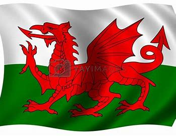
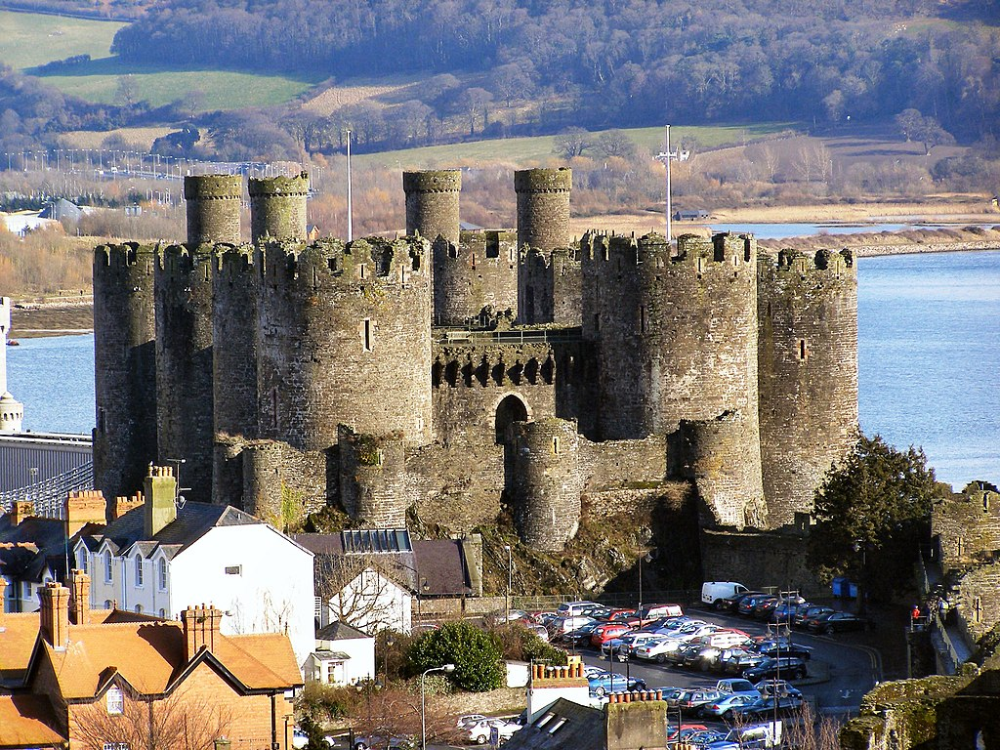
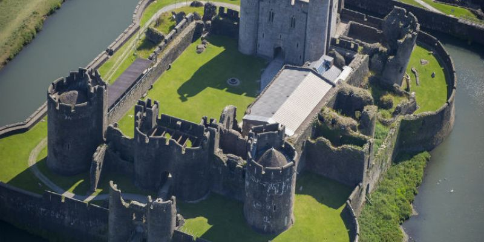

Want to start a trip? Click the flag on the right to log in!

Wales is one of the six Celtic nations. The native people of Wales, the Welsh, have their own culture and traditions. They have their own Celtic language, Welsh. Although not all Welsh people can speak Welsh, it is a real living language for about 20% of Welsh people. Nearly all Welsh people can speak English. Some of them speak only English. The Welsh language has official status in Wales. Three million people live in Wales. Most of them live in the southern and eastern parts of the country. In this area is the capital and largest city of Wales, Cardiff, and the next largest city, Swansea.
This section presents Wales as part of the open-source UK tourism guide.
If you are a fan of medieval European culture, the castles in Wales are a highlight you should not miss.


| For more information, please refer to the official Wales travel page: https://www.visitbritain.com/gb/en/wales/anglesey |
See what other people say about Wales? We've got one V-log for you.